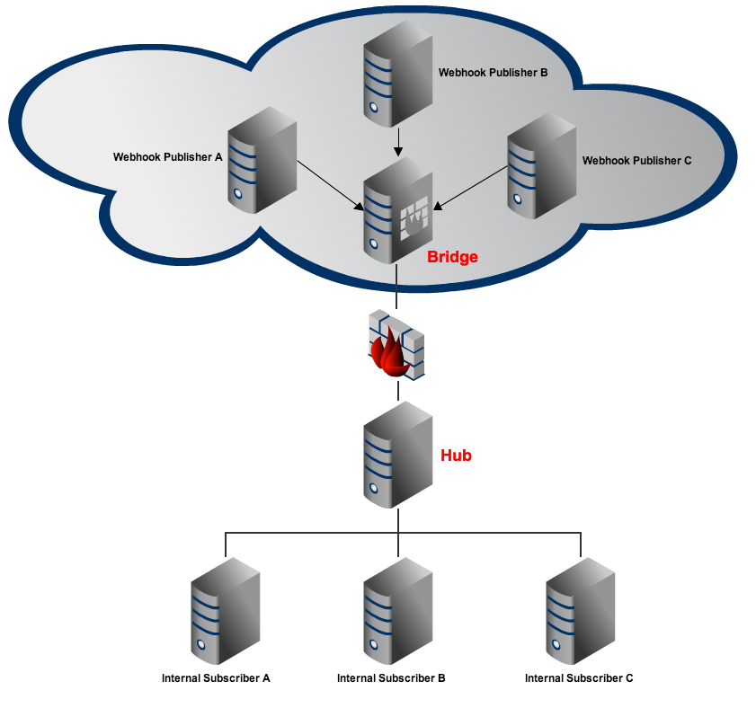
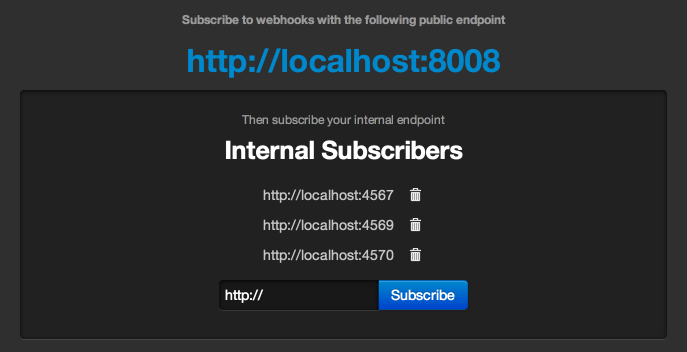

Webhook subscriptions through firewalls
When you're within corporate firewalls, subscribing to Webhook publishers can be tricky. Corporate policies on open ports and firewall configurations can prevent development teams from using webhooks with their internal systems such as CI, builds, APIs and notifications.
Eirobridge was created to address this issue. Developed with Node.js and WebSockets, this project attempts to solve the issue of complicated firewall configurations and setups. Development teams can now subscribe to any webhook on the public internet by deploying two components: the bridge and the hub.
Diagram of a typical Eirobridge setup
The bridge is a long running process that should be publicly accessible on the internet whose web address is given to webhook publishers. The hub is another long running process that sits inside your firewalls and connects to the bridge through a websocket on port 80 (or any available port). Whenever a webhook publisher pushes a new message to the bridge, it will just pass the message right through to any connected hubs, meanwhile preserving HTTP header information. Internally within the firewall, the hub maintains its own list of subscribers who are interested in the webhook messages being sent to the bridge. Subsequently, any message received by the hub will be redistributed to all internal subscribers.
$ npm install# To be run on the server designated as the Bridge (publicly accessible on the internet)
$ node index.js# To be run on the server designated as the Hub (within your firewall)
$ node hub.js --bridge http://url-to-the-bridgeNow visit your hub server and add some internal subscribers. You should see a webpage similar to the one in the following screenshot.
Screenshot of the hub webpage
The hub can also be accessed through a RESTful API with the base path "/" as the resource representing a subscriber.
Start subscribing to webhooks on the internet with your bridge's URL